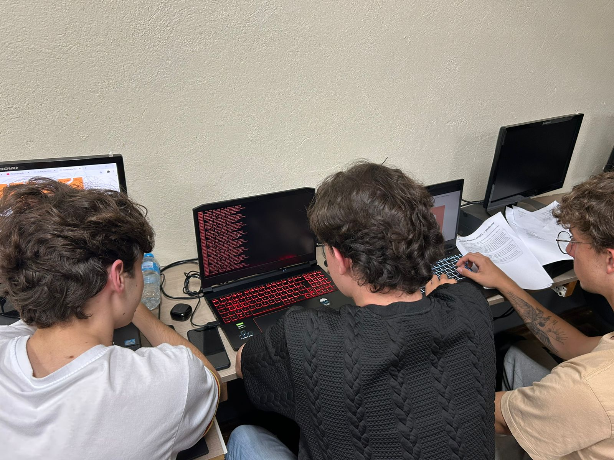

Num teste comum, a Iara pediu uma confirmação. A pessoa do outro lado respondeu só uma palavra: "talvez".
O sistema simplesmente parou de saber o que fazer. Não caiu, nada tão dramático assim. Travou de um jeito mais chato: como não sabia se "talvez" contava como sim ou como não, fez a única coisa que sabia fazer, que era repetir a pergunta. A pessoa respondeu "talvez" de novo. A pergunta voltou de novo. No grupo do squad, alguém mandou um print da conversa rodando sozinha, tipo disco pulando, só com um "kkkk isso não vai parar" de legenda.

A primeira vontade foi resolver rápido. Mapear "talvez" pra "não" e seguir em frente. Cinco minutos, uma linha de código. Mas a gente segurou a mão ali. Antes de mexer em qualquer coisa, queria entender por que aquilo estava acontecendo.
A investigação
A causa não estava na palavra "talvez" em si. Estava numa suposição que a gente tinha feito sem perceber: a de que pergunta fechada recebe resposta fechada. O fluxo de confirmação foi desenhado com duas saídas, sim ou não, porque foi assim que a gente imaginou a conversa enquanto programava.
Só que gente de verdade não conversa assim. Gente de verdade responde com dúvida. Com pergunta de volta. Com um "depende" jogado ali no meio. Se a gente tivesse resolvido só o "talvez", vinha o "sei lá" duas mensagens depois e derrubava tudo de novo. Daí vinha o "acho que sim". O "hmm". A lista de palavras que não são nem sim nem não é enorme, e tratar uma por uma ia ser tipo enxugar gelo pra sempre.
O problema não era a palavra "talvez". Era esperar que as pessoas respondessem como máquina.
A correção
Com a causa clara, a correção acabou saindo maior do que a gente esperava. Hoje, quando uma resposta não é claramente sim nem não, o sistema primeiro olha o que já foi dito na conversa. Na maioria das vezes isso já resolve sozinho. Se ainda não der pra decidir, a Iara pergunta de novo, só que reformulando, em vez de repetir a mesma frase feito disco arranhado.
E se depois de duas tentativas a dúvida continuar, entra um atendente humano. É esse o combinado: ninguém fica preso num loop com robô.
A gente passou semanas ensinando a Iara a reconhecer os cinco níveis do Inaf, tabela de descritores, casos-âncora, aquilo tudo. E quase esqueceu de ensinar a coisa mais óbvia: que ninguém, nem a avó, nem a gente mesmo, fala só em sim ou não o tempo todo. Ainda tem uma lista de palavras estranhas testadas depois daquela noite ("sei lá", "bora ver", "pode ser que sim"), mas isso já é assunto pra outro post. Por hoje ficamos por aqui.